Мы сделали Polako RAW для себя — для пейзажной съёмки на Sony, где RAW должен оставаться нетронутым, а тяжёлую работу (маски неба, шумодав, удаление пыли, релайтинг по глубине) надо делать локально, а не в облаке. Ползунки считаются на GPU, поэтому кадр отзывается за десятки миллисекунд, а каждая правка — это XMP-файл рядом со снимком, который можно копировать, вставлять и откатывать. Больше всего нам нравятся авто с распознаванием сцены, выбор неба в один клик и релайтинг по глубине. Что ещё впереди: релайтинг пока не задаёт направление света, выборочный цвет работает по восьми каналам, а приложение остаётся Alpha для macOS на Apple Silicon. Напишите, что вам мешает, — это именно то, что мы хотим услышать.
 AI photo editor · macOS · Apple Silicon
AI photo editor · macOS · Apple Silicon
POLAKO RAW
Локальный RAW-редактор для пейзажных фотографов. Проявка на GPU в реальном времени, нейросети сами выделяют небо, чистят пыль и шум — а исходный файл остаётся нетронутым.
Скриншоты
Интерфейс вживую
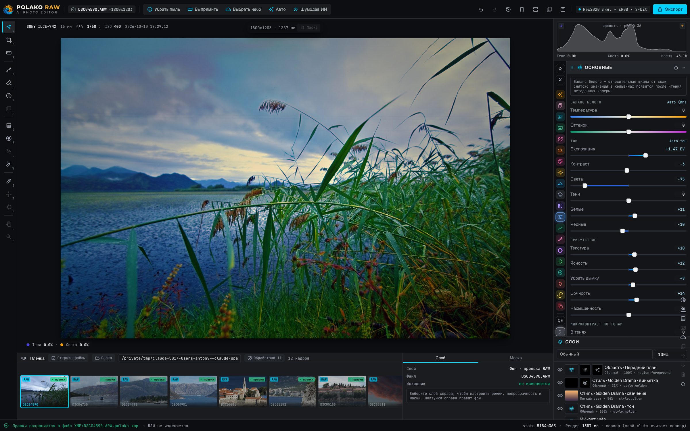
Проявка — основные
Экспозиция, контраст, света, тени, белые и чёрные, текстура и чёткость на кадре, снятом в RAW. Гистограмма с клиппингом и живое превью на GPU.
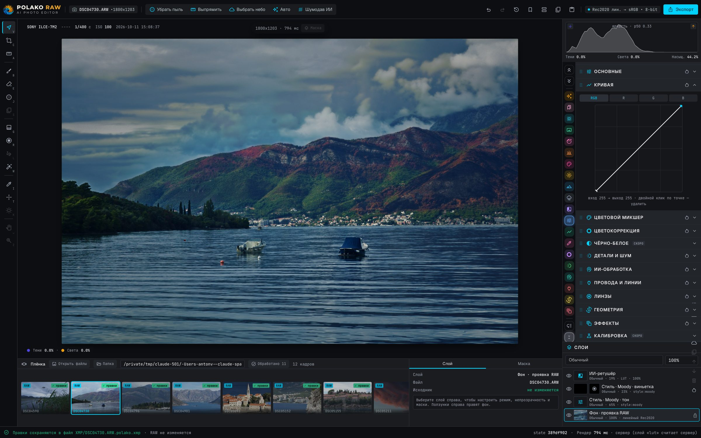
Кривая и слои со стилями
Кривая с точками плюс слои: область «Передний план» и стиль Moody — каждый со своей маской и прозрачностью.
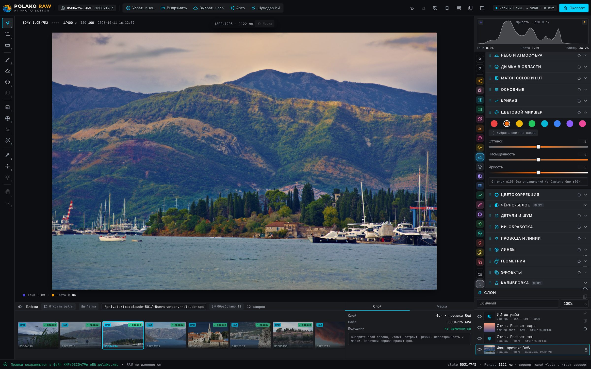
Цветовой микшер
Восемь каналов: оттенок, насыщенность, яркость. Поверх — слои «Золотая драма» и ИИ-силуэт.
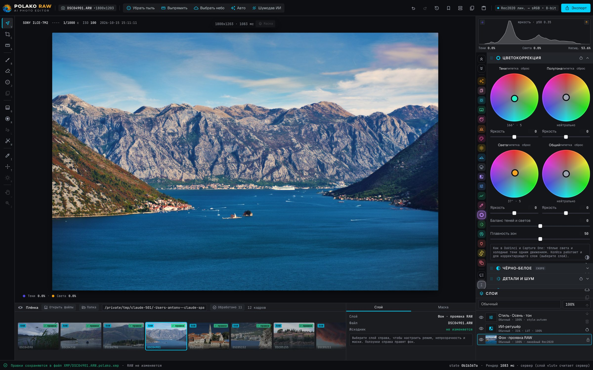
Цветокоррекция: три колеса
Колёса для теней, полутонов, светов и общего тона, баланс и плавность зон.
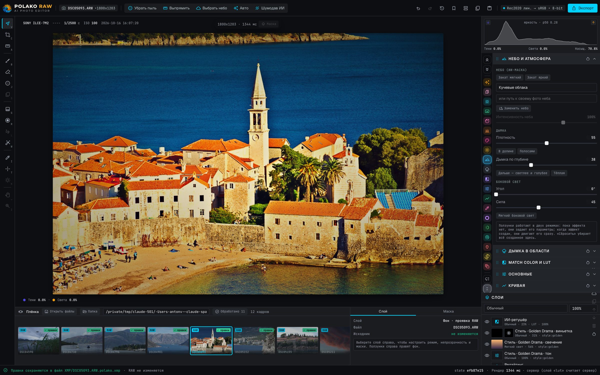
Небо и атмосфера
ИИ выделяет небо, а пресеты — «закат мягкий», «кучевые облака» — меняют его отдельно от кадра. Дымка по глубине.
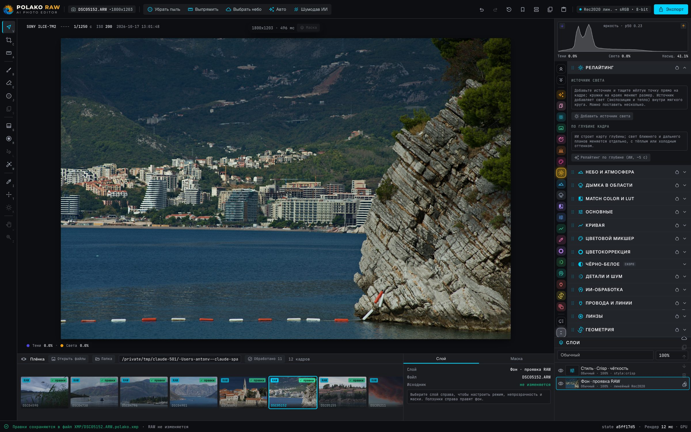
Релайтинг по глубине
Ближний и дальний план подсвечиваются отдельно по карте глубины ИИ, плюс источники света на кадре.
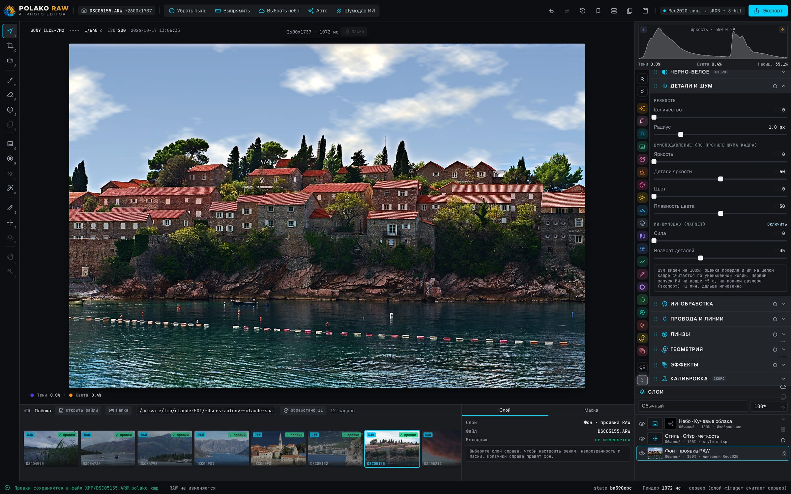
Детали, шум и ИИ-шумодав
Резкость с маской, подавление шума и нейросетевой шумодав — для высоких ISO и закатных теней.
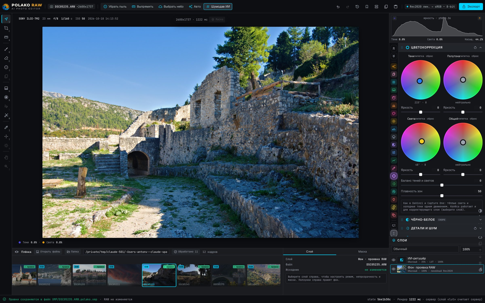
Цвет в тенях и светах
Отдельный тон теням и светам — тёплый камень, холодная тень — без потери натурального цвета.
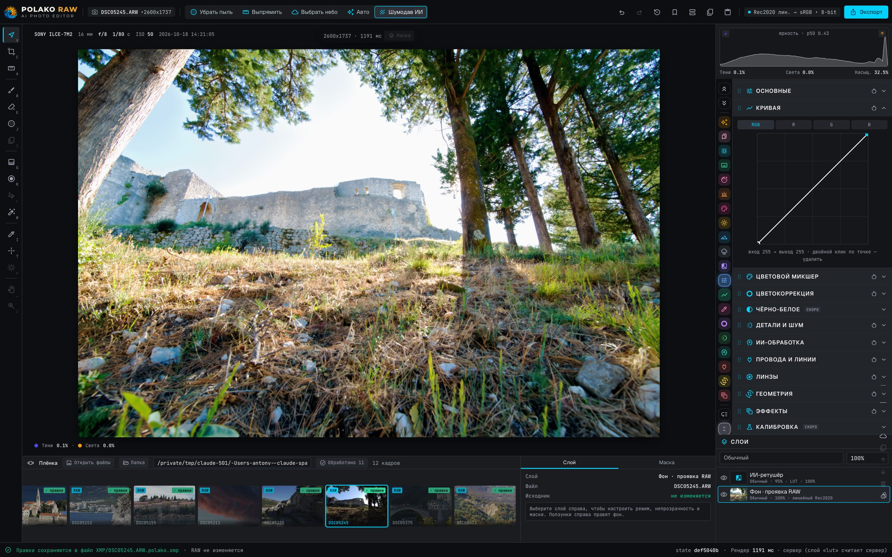
Кривая
Кривая по точкам: контраст в светах, мягкие тени, расширенный динамический диапазон из RAW.
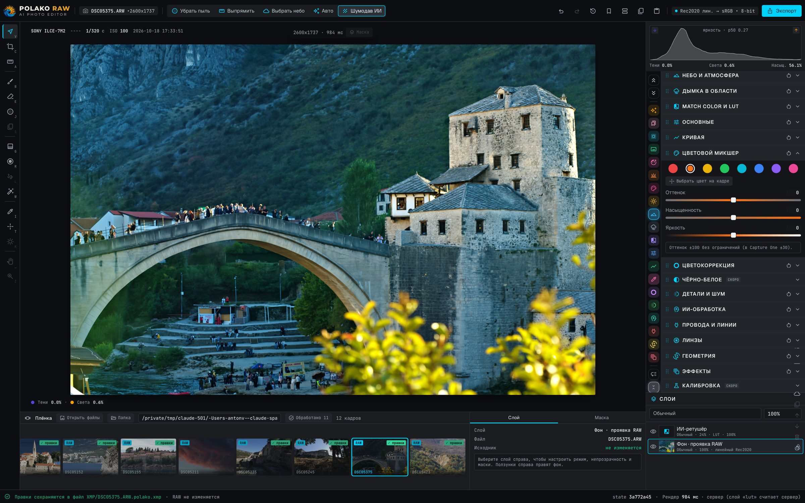
Пипетка и выборочный цвет
Нажмите на цвет в кадре и потяните — сам выберется нужный из восьми каналов.
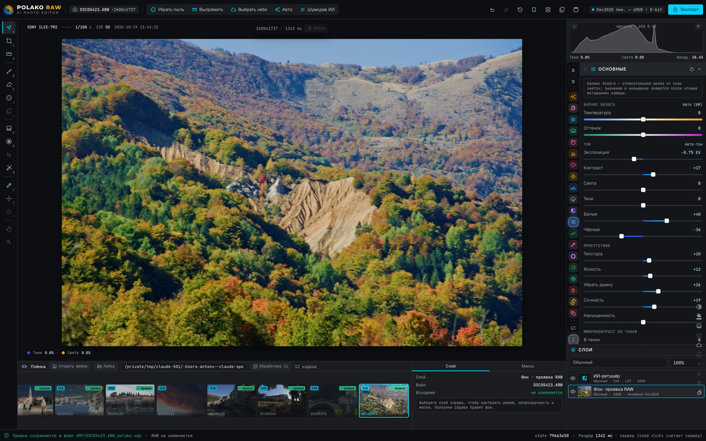
Осенний склон — проявка
Температура, оттенок, экспозиция и контраст на осенних холмах: цвет вытягивается без пересветов.

Кадрирование, горизонт, авто-кадр
Рамка прямо на кадре, линия по горизонту и подсказки ИИ, которые ставят объект на линии третей.
Возможности
Всё, что нужно пейзажу
Non-destructive
Исходный RAW не изменяется
Все правки лежат в XMP-файле рядом со снимком и сохраняются автоматически. Отмена, история и журнал правок всегда под рукой.
AI masks
Нейромаски SAM 2
Один клик выделяет небо, объект, воду или зелень и создаёт слой с собственными поправками.
Denoise
ИИ-шумодав
Чистка высоких ISO на базе NAFNet, которая сохраняет текстуру, а не размазывает её.
Cleanup
Удаление пыли
Инпейнтинг LaMa находит и убирает пятна на матрице за один проход.
Relight
Релайтинг по глубине
Ближний и дальний планы подсвечиваются отдельно, тёплым или холодным оттенком, по карте глубины ИИ.
Auto
Авто с распознаванием сцены
Определяет закат, море, лес, снег, архитектуру и другое, и собирает под сцену проявку.
Layers & masks
Слои, градиенты и кисти
Линейные, радиальные и фигурные градиенты с ручками прямо на кадре, кисть, маски по яркости, режимы наложения и прозрачность каждого слоя.
Compare
До / после
Переключатель, шторка или рядом — режимы листаются одной клавишей.
Workflow
Копирование установок
Копируйте все правки с одного кадра и вставляйте на другой по группам — одним отменяемым шагом.
Presets
Пресеты XMP и Lightroom
Свои looks сохраняются как .xmp, а пресеты Lightroom / Camera Raw загружаются: тон, HSL, цветокоррекция, кривые.
Details
Провода, линзы, микроконтраст
Удаление проводов и линий, коррекция линз, микроконтраст в тенях, полутонах и светах.
Под капотом
Быстро там, где важно
01
Декодирование RAW
Ядро Darktable декодирует RAW в линейный Rec.2020.
02
Проявка на GPU
Ползунки считаются в WebGL: ~5–30 мс на кадр.
03
Нейрослой
SAM 2, NAFNet, LaMa и глубина работают на Apple Silicon (MPS).
04
Эталонный рендер
Серверный рендер — эталон; GPU-превью совпадает с ним в пределах ~0,2 уровня.
05
Экспорт
sRGB 8-bit из линейного конвейера Rec.2020.
Спецификация
Детали
ПлатформаmacOS · Apple Silicon
РаботаПолностью локально, без облака
Рабочее пространствоRec.2020 linear
ПравкиСайдкар XMP, RAW не меняется
ИнтерфейсSvelte · Tauri
СтатусAlpha
Скачать · Alpha
Попробуйте уже сейчас
Polako RAW в открытой альфе: бесплатно, всё работает на вашем Mac, и нам очень нужны ваши отзывы. Всё внутри одного образа: программа, ИИ-модели и RAW-движок. Без аккаунта и без загрузки фото в облако.
v0.1.0 alpha · SHA-256 099ee8a97928e95718f2263753bb9e91a7ad25ba5f90e32640fa42055b56f9e0
ТребуетсяmacOS 13+ · Apple Silicon (M1 и новее)
Память и дискРекомендуется 16 ГБ RAM · ~4 ГБ свободно + кэш
ФорматыRAW (ARW, DNG, CR3, NEF …), JPEG, PNG, TIFF
ЯзыкиРусский · English · Español · Crnogorski
ПриватностьПолностью локально: фото не покидают Mac
WindowsВ планах
Первый запуск (около минуты)
- Откройте .dmg и перетащите приложение в «Программы».
- Альфа пока без платной подписи Apple, поэтому macOS может заблокировать первый запуск: правый клик по приложению → Открыть → Открыть (или Системные настройки → Конфиденциальность и безопасность → «Всё равно открыть»).
- Откройте фото или перетащите папку в окно. Оригиналы не меняются: правки хранятся в папке XMP рядом.
Альфа-версия: возможны шероховатости. Лицензии сторонних компонентов и моделей перечислены в THIRD_PARTY_NOTICES.txt внутри образа.
Отзывы